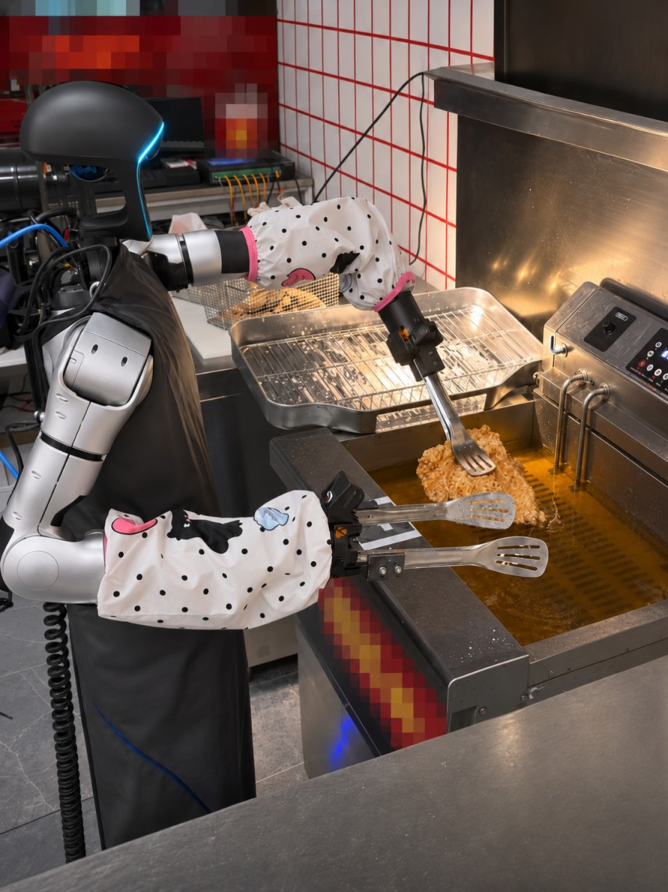

具身智能 / 商用厨房机器人
炸鸡排机器人走进真实后厨：18个动作与多任务并行
36氪报道果实进化机器人在餐饮实验门店自主完成裹粉、下锅与沥油；企业披露四块鸡排并行测试的完整任务完成率为75%。

36氪产业创新 11 月 18 日 10:42 报道，果实进化机器人已在一家大型炸食品牌的线下实验门店运行炸鸡排任务。文章称，机器人可执行取料、裹粉、抖粉、入锅、起锅和沥油等 18 个子项动作；10 月 28 日的一次实测中，四块鸡排并行、多轮炸制的完整任务完成率为 75%，并持续作业两小时。上述结果来自企业及报道描述，文中未给出独立第三方测试记录。
这个案例的看点是任务从单一重复动作扩展到多件食品并行调度。报道介绍系统会持续观察环境，在异常、低置信度或涉及安全时暂停并请求人工介入。它目前属于商用后厨探索，不能等同于可在家庭灶台工作的通用厨师机器人；油锅安全、食材差异、清洁维护和长期稳定性仍需更多公开验证。
36氪产业创新｜果实进化真实门店炸鸡排机器人报道 · 2026-11-18 10:42（北京时间）36氪报道配图｜果实进化机器人在炸制工位操作 · 随 36氪报道发布；图片资产日期 2026-11-17报道发布：11月18日 10:42（北京时间），处于本期24小时窗起点；底层门店演示发生于10月28日，本文不将演示日误写为新闻发布时间。